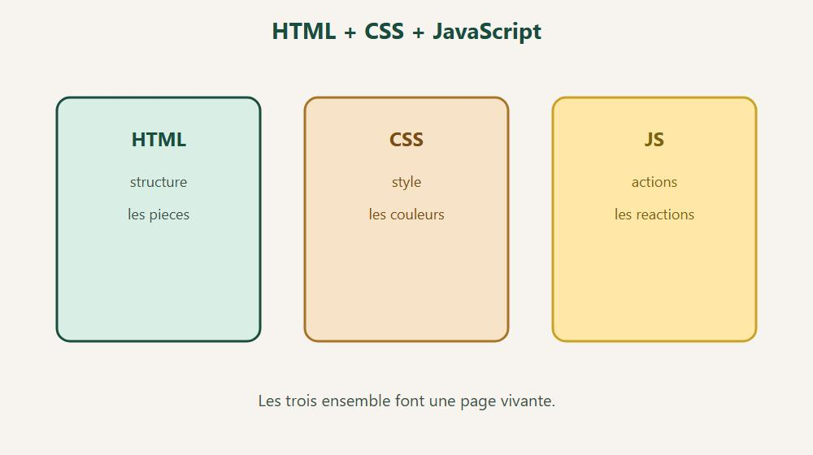
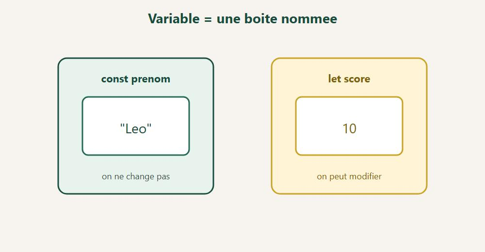
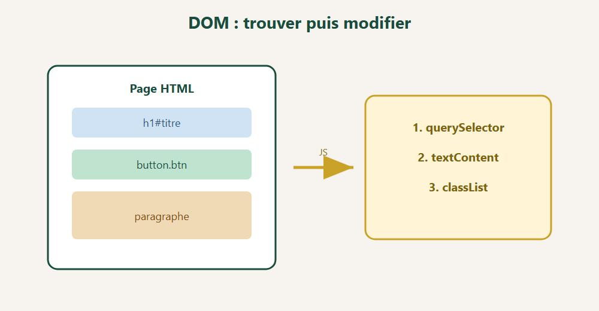

Les bases pour rendre une page web interactive. Explique simplement, sans blabla inutile.
DanielCraft - Livre debutant
Chapitre 1
Chapitre 1 - Salut, c'est quoi JavaScript ?

HTML structure. CSS habille. JS fait reagir.
Tu as deja HTML (la structure) et CSS (le look).
JavaScript, c'est le mouvement. La reaction. La vie.
Sans JS, une page regarde.
Avec JS, elle repond.
Image mentale
Pense a une personne. Le HTML, c'est le corps : la forme, les pieces, ce qui existe. Le CSS, ce sont les vetements : couleurs, style, presentation. JavaScript, c'est le cerveau, et un peu les muscles. C'est lui qui decide, qui reagit, qui fait bouger.
Tu cliques un bouton ? JS peut compter.
Tu ecris ton prenom ? JS peut te dire "Salut, toi".
Tu rates un champ ? JS peut te prevenir.
Ou ca tourne ?
Dans le navigateur. Directement.
Pas besoin d'installer un truc complique pour commencer.
Ce que tu vas savoir faire
A la fin de ce parcours, tu sauras ecrire tes premiers scripts et ranger des infos dans des variables. Tu apprendras a prendre des decisions avec if, a repeter des actions avec des boucles, et a creer des fonctions reutilisables. Tu verras aussi comment modifier la page (le DOM) et comment reagir aux clics. Bref : rendre une page vivante, pas juste jolie.
Important
On reste sur les bases.
Pas de framework. Pas de magie obscure.
Juste du JS clair, pour comprendre.
Allez. On branche le cerveau de la page.
Erreur classique
Beaucoup de debutants confondent JavaScript et Java. Ce sont deux langages differents. JavaScript vit dans le navigateur pour rendre les pages vivantes. Java sert surtout a d'autres types de programmes.
Autre piege : croire que JS remplace HTML ou CSS. Non. Les trois travaillent ensemble.
Exemple complet
Imagine une page avec un bouton. Sans JS, le bouton ne fait rien d'utile. Avec JS, il peut reagir :
// On attend que la page soit chargee
const bouton = document.querySelector("#direBonjour");
// Quand on clique, on affiche un message
bouton.addEventListener("click", function () {
alert("Salut ! La page t'a entendu.");
});
Tu n'as pas besoin de tout comprendre maintenant. L'idee : JS ecoute et repond.
Mini defi
Ouvre un site que tu aimes (YouTube, un jeu en ligne, peu importe). Note trois actions interactives : un clic, un scroll, un formulaire... Pour chacune, demande-toi : c'est plutot HTML, CSS ou JS ? Ensuite, si tu peux, desactive JavaScript dans les options developpeur du navigateur et regarde ce qui casse. Tu verras tout de suite a quoi sert le "cerveau" de la page.
A retenir
JavaScript, c'est le cerveau interactif de la page. Il tourne dans le navigateur, sans installation compliquee pour commencer. HTML structure, CSS habille, JS fait bouger et reagir. Ici, on apprend les bases, pas un framework.
En vrai, sur le terrain
Ouvre la console. Retape l'exemple a la main.
Change une valeur. Regarde ce qui bouge. C'est comme ca que ca rentre.
Mini defi
Inventes un tout petit cas perso (ton prenom, ton score, ton jeu prefere).
Repars de l'exemple avec TES donnees. Si ca marche, c'est bon signe.
Chapitre 2
Chapitre 2 - Ou ecrire du JavaScript ?
Trois facons simples. On commence par la plus claire.
1. Dans un fichier .js (le mieux)
Cree script.js :
console.log("Salut depuis mon fichier !");
Dans ton HTML, juste avant </body> :
<script src="script.js"></script>
Pourquoi avant </body> ?
Parce que la page est deja la. Plus simple pour debuter.
2. Direct dans le HTML (pour tester)
<script>
console.log("Coucou");
</script>
Pratique 2 minutes. Sur un vrai projet, prefere un fichier .js.
3. La console du navigateur
1. Ouvre ta page
2. F12 (outils developpeur)
3. Onglet Console
4. Tape : console.log("test")
5. Entree
console.log = "affiche ca dans la console".
C'est ton ami pour verifier que ca marche.
Mini structure de dossier
mon-site/
index.html
style.css
script.js
A toi
1. Cree index.html + script.js
2. Relie-les
3. Affiche ton prenom avec console.log
4. Ouvre la console. Si tu le vois : gagne.
Erreur classique
Tu mets le script en haut du HTML, avant le contenu. Le JS tourne avant que les elements existent. Resultat : erreur ou null.
// script.js
const titre = document.querySelector("#titre");
console.log("Le titre dit :", titre.textContent);
console.log("Script charge avec succes !");
Ouvre la console. Tu dois voir les deux lignes.
Mini defi
Cree le dossier mon-site/ avec les trois fichiers habituels. Dans script.js, affiche ton age et ta ville avec console.log. Ensuite, casse volontairement le chemin (scrip.js au lieu de script.js) et lis l'erreur dans la console. Remets le bon chemin, rafraichis, et verifie que tout reprend. Tu apprends autant en cassant qu'en reussissant.
A retenir
Un fichier .js separe, c'est la bonne habitude des le debut. Tu le branches avec <script src="..."> juste avant </body> pour commencer simplement. console.log reste ton outil de debug numero 1, et la console (F12) te laisse tester du code en deux secondes.
En vrai, sur le terrain
Ouvre la console. Retape l'exemple a la main.
Change une valeur. Regarde ce qui bouge. C'est comme ca que ca rentre.
Mini defi
Inventes un tout petit cas perso (ton prenom, ton score, ton jeu prefere).
Repars de l'exemple avec TES donnees. Si ca marche, c'est bon signe.
Chapitre 3
Chapitre 3 - Les variables (des boites a infos)

const = fixe. let = modifiable. Des boites avec un nom.
Une variable, c'est une boite avec une etiquette.
Tu ranges une valeur. Tu la reutilises plus tard.
let et const
let age = 12;
const prenom = "Leo";
Avec let, tu pourras changer la valeur plus tard. Avec const, tu ne changes pas : c'est une constante. Astuce debutant : utilise const par defaut, et passe a let seulement si tu dois vraiment modifier la valeur.
let nombreDeClics = 0;
const messageBienvenue = "Salut";
Non (ou alors on se perd) :
let x = 0;
let a1 = "Salut";
Attention
const ville = "Lyon";
ville = "Paris"; // erreur
const protege. C'est voulu.
A toi
Cree une constante prenom avec ton prenom entre guillemets, puis un let points = 0. Ajoute 5 points, et affiche le prenom et les points avec console.log. Tu dois voir les deux infos dans la console.
Erreur classique
Tu reutilises un nom sans le declarer. JS cree une variable globale par accident. Ca casse tout sur une grosse page.
Mauvais :
score = 10; // oubli de let ou const
Bon :
let score = 10;
Autre piege : tu changes une const. Le navigateur bloque. C'est normal, c'est la protection.
Exemple complet
// Un mini profil joueur
const pseudo = "PixelFox";
let niveau = 1;
let xp = 0;
// On gagne de l'xp
xp = xp + 50;
console.log(pseudo + " a " + xp + " xp");
// Passage de niveau
if (xp >= 50) {
niveau = niveau + 1;
xp = xp - 50;
console.log("Niveau up ! Tu es niveau " + niveau);
}
console.log("Etat final : niveau " + niveau + ", xp " + xp);
Lis la console ligne par ligne. Tu vois comment les valeurs changent.
Mini defi
Cree trois const : prenom, ville, animal prefere. Cree aussi deux let : compteurVisites et derniereNote. Modifie seulement les let, laisse les const tranquilles. Ensuite, affiche une phrase qui melange tout avec des +. Si la console rale quand tu touches une const, c'est que tu as bien compris la protection.
A retenir
Prends const par defaut, et let seulement si tu dois changer la valeur. Un nom clair vaut mieux que x ou a1. Declare toujours avec let ou const : une variable, c'est une boite etiquetee que tu reutilises.
En vrai, sur le terrain
Ouvre la console. Retape l'exemple a la main.
Change une valeur. Regarde ce qui bouge. C'est comme ca que ca rentre.
Mini defi
Inventes un tout petit cas perso (ton prenom, ton score, ton jeu prefere).
Repars de l'exemple avec TES donnees. Si ca marche, c'est bon signe.
Chapitre 4
Chapitre 4 - Les types simples
Les valeurs n'ont pas toutes la meme "forme".
Texte (string)
const phrase = "Bonjour";
const autre = 'Hey';
Guillemets doubles ou simples, les deux marchent.
Reste coherent dans un fichier.
Nombre (number)
const prix = 19.99;
const quantite = 3;
const total = prix * quantite;
Vrai / faux (boolean)
const estConnecte = true;
const aFini = false;
Utile pour les decisions.
undefined et null (juste savoir)
undefined, c'est "pas encore defini". null, c'est volontairement "vide". Pas besoin d'en faire des tartines au debut : sache juste que ces deux etats existent.
Les backticks \ \ permettent d'inserer ${...} dedans.
A toi
Fais un mini ticket de caisse. Range le prix d'un article, la quantite, calcule le total, puis affiche un message du genre "Total = ...". Tu dois voir le calcul et le texte dans la console.
Erreur classique
Tu additionnes un nombre et du texte sans faire attention. JS colle les morceaux au lieu de calculer.
Mauvais :
const total = "19" + 3; // "193" (texte)
Bon :
const total = 19 + 3; // 22 (nombre)
Ou convertis avec Number("19") si la valeur vient d'un champ texte.
.toFixed(2) arrondit a 2 decimales. Pratique pour l'argent.
Mini defi
Cree une variable texte, une nombre, et une booleenne. Affiche le type de chaque valeur avec typeof maVariable. Fais un calcul prix fois quantite, puis un message avec des backticks. Enfin, teste "5" + 2 et 5 + 2, et note bien la difference : l'un colle du texte, l'autre calcule.
A retenir
Une string, c'est du texte. Un number, c'est un nombre. Un boolean, c'est true ou false. Pour comparer sans melanger les types, utilise ===. Les backticks \...\ avec ${...} simplifient l'assemblage de texte. Et attention aux guillemets : ils peuvent transformer un nombre en texte sans que tu le voies.
En vrai, sur le terrain
Ouvre la console. Retape l'exemple a la main.
Change une valeur. Regarde ce qui bouge. C'est comme ca que ca rentre.
Mini defi
Inventes un tout petit cas perso (ton prenom, ton score, ton jeu prefere).
Repars de l'exemple avec TES donnees. Si ca marche, c'est bon signe.
Chapitre 5
Chapitre 5 - Les conditions (if)
Parfois tu veux : "si ca, alors ca".
if / else
const age = 15;
if (age >= 18) {
console.log("Majeur");
} else {
console.log("Mineur");
}
Pour comparer, tu as surtout === (egal strict, recommande), !== (different), puis >, <, >= et <=. Evite == pour l'instant : === est plus clair et te protege des surprises de types.
Teste en changeant les valeurs en haut du fichier.
Mini defi
Cree une variable temperature. Si elle est superieure ou egale a 25, affiche "Chaud". Sinon, si elle est au moins a 15, affiche "Correct". Sinon, affiche "Froid". Ajoute aussi un cas special : si la temperature depasse 35, affiche "Canicule !". Change la valeur plusieurs fois pour voir chaque branche.
A retenir
if, else if et else enchainent tes decisions. Pour comparer, utilise ===, pas =. && veut dire "et", || veut dire "ou". Garde les conditions simples et lisibles : une idee claire par test.
En vrai, sur le terrain
Ouvre la console. Retape l'exemple a la main.
Change une valeur. Regarde ce qui bouge. C'est comme ca que ca rentre.
Mini defi
Inventes un tout petit cas perso (ton prenom, ton score, ton jeu prefere).
Repars de l'exemple avec TES donnees. Si ca marche, c'est bon signe.
Chapitre 6
Chapitre 6 - Les boucles (repete sans te fatiguer)
Une boucle = faire la meme chose plusieurs fois.
Sans copier-coller 40 lignes.
for (classique)
for (let i = 1; i <= 5; i = i + 1) {
console.log("Tour numero " + i);
}
Lecture :
1. commence a 1
2. tant que i <= 5
3. a chaque tour, ajoute 1
while
let vies = 3;
while (vies > 0) {
console.log("Il reste " + vies + " vies");
vies = vies - 1;
}
Attention : si tu oublies de faire baisser vies, boucle infinie.
Le navigateur va raler. Toi aussi.
Boucler sur une liste (aperçu)
const fruits = ["pomme", "banane", "kiwi"];
for (const fruit of fruits) {
console.log(fruit);
}
On creusera les tableaux juste apres.
A toi
Affiche la table de 7 (de 7x1 a 7x10) avec une boucle for.
Erreur classique
Tu oublies d'avancer le compteur dans une boucle while. Le programme tourne a l'infini. Le navigateur freeze.
Mauvais :
let i = 0;
while (i < 5) {
console.log(i);
// oubli de i = i + 1
}
Bon :
let i = 0;
while (i < 5) {
console.log(i);
i = i + 1;
}
Exemple complet
// Compter les mots de 4 lettres ou plus
const mots = ["le", "chat", "dort", "sur", "tapis"];
let compteur = 0;
for (const mot of mots) {
if (mot.length >= 4) {
compteur = compteur + 1;
console.log(mot + " compte !");
}
}
console.log("Total mots longs : " + compteur);
// Table de multiplication 3
console.log("--- Table de 3 ---");
for (let n = 1; n <= 10; n = n + 1) {
console.log("3 x " + n + " = " + (3 * n));
}
.length donne la taille d'un texte. Pratique dans les boucles.
Mini defi
Avec une boucle for, affiche les nombres pairs de 2 a 20. Ensuite, fais la somme de 1 a 100 (tu dois obtenir 5050). Parcours aussi un tableau de prenoms et affiche "Salut, [prenom] !" pour chacun. En bonus, arrete la boucle si tu trouves le mot "stop" dans la liste.
A retenir
for, c'est quand tu connais le nombre de tours. while, c'est tant qu'une condition reste vraie. for...of parcourt un tableau simplement. Dans tous les cas, fais evoluer ton compteur : sinon tu te retrouves avec une boucle infinie.
En vrai, sur le terrain
Ouvre la console. Retape l'exemple a la main.
Change une valeur. Regarde ce qui bouge. C'est comme ca que ca rentre.
Mini defi
Inventes un tout petit cas perso (ton prenom, ton score, ton jeu prefere).
Repars de l'exemple avec TES donnees. Si ca marche, c'est bon signe.
Chapitre 7
Chapitre 7 - Les fonctions (des recettes reutilisables)
Une fonction, c'est une recette.
Tu la definis une fois. Tu l'appelles quand tu veux.
Creer et appeler
function direSalut() {
console.log("Salut !");
}
direSalut();
direSalut();
Avec des ingredients (parametres)
function direSalutA(prenom) {
console.log("Salut " + prenom);
}
direSalutA("Nora");
direSalutA("Tom");
Avec un resultat (return)
function double(n) {
return n * 2;
}
const resultat = double(4);
console.log(resultat); // 8
return renvoie une valeur. Sans return, tu obtiens undefined.
Pourquoi c'est cool
Tu copies moins. Le code devient plus clair. Et quand un bug arrive, tu corriges a un seul endroit au lieu de chasser la meme erreur partout. Une bonne fonction, c'est une petite machine fiable.
Petite forme moderne (juste voir)
const triple = (n) => n * 3;
Tu verras ca souvent. Pour l'instant, function suffit largement.
A toi
Ecris moyenne(a, b) qui renvoie la moyenne de deux notes.
Teste avec 12 et 16.
Erreur classique
Tu oublies return. La fonction fait son travail, mais tu recupères undefined.
Mauvais :
function carre(n) {
n * n; // resultat perdu
}
console.log(carre(4)); // undefined
Bon :
function carre(n) {
return n * n;
}
console.log(carre(4)); // 16
Exemple complet
// Mini calculateur de notes
function moyenne(a, b, c) {
return (a + b + c) / 3;
}
function mention(note) {
if (note >= 16) return "Tres bien";
if (note >= 14) return "Bien";
if (note >= 10) return "Passable";
return "Insuffisant";
}
function afficherBulletin(prenom, n1, n2, n3) {
const moy = moyenne(n1, n2, n3);
const m = mention(moy);
console.log(prenom + " : " + moy.toFixed(1) + "/20 - " + m);
}
afficherBulletin("Leo", 12, 15, 18);
afficherBulletin("Nina", 8, 9, 11);
Chaque fonction a un role clair. C'est plus facile a lire et a corriger.
Mini defi
Ecris aireRectangle(largeur, hauteur) qui renvoie le resultat avec return. Ecris aussi estMajeur(age) qui renvoie true ou false. Puis saluer(prenom), qui affiche juste un message sans return. Appelle les trois fonctions avec des valeurs differentes et verifie ce que la console te montre.
A retenir
Une fonction, c'est une recette reutilisable. Les parametres sont les ingredients, et return sort le plat fini. Sans return, tu recuperes undefined. Prefere plusieurs petites fonctions a une grosse usine : ton code reste propre.
En vrai, sur le terrain
Ouvre la console. Retape l'exemple a la main.
Change une valeur. Regarde ce qui bouge. C'est comme ca que ca rentre.
Mini defi
Inventes un tout petit cas perso (ton prenom, ton score, ton jeu prefere).
Repars de l'exemple avec TES donnees. Si ca marche, c'est bon signe.
Chapitre 8
Chapitre 8 - Les tableaux (des listes)
Un tableau, c'est une file d'attente d'elements.
Index commence a 0. Oui, a 0. Bizarre au debut, puis normal.
// Liste de courses avec actions
const courses = ["pain", "lait", "oeufs"];
// Ajouter
courses.push("fromage");
console.log("Apres ajout :", courses);
// Parcourir et numeroter
for (let i = 0; i < courses.length; i = i + 1) {
console.log(i + 1 + ". " + courses[i]);
}
// Chercher
const cherche = "lait";
if (courses.includes(cherche)) {
console.log(cherche + " est dans la liste");
}
// Retirer le dernier
const retire = courses.pop();
console.log("Retire : " + retire);
console.log("Liste finale :", courses);
Mini defi
Cree un tableau de cinq films. Affiche le premier et le dernier. Ajoute un film avec push, puis retires-en un avec pop. Ensuite, parcours la liste avec for...of et affiche chaque titre en majuscules grace a .toUpperCase(). Tu dois voir la liste evoluer dans la console.
A retenir
L'index commence a 0. push ajoute a la fin, pop retire le dernier. length donne le nombre d'elements, et includes te dit si un element est deja dans le tableau.
En vrai, sur le terrain
Ouvre la console. Retape l'exemple a la main.
Change une valeur. Regarde ce qui bouge. C'est comme ca que ca rentre.
Mini defi
Inventes un tout petit cas perso (ton prenom, ton score, ton jeu prefere).
Repars de l'exemple avec TES donnees. Si ca marche, c'est bon signe.
Un tableau, c'est une liste d'elements du meme genre : plusieurs jeux, plusieurs prenoms, plusieurs prix. Un objet, c'est une seule chose avec plusieurs infos : un joueur, un livre, un produit. Souvent, tu combines les deux : un tableau d'objets.
A toi
Cree un objet livre avec un titre, un nombre de pages, et une propriete lu en true ou false. Affiche ensuite une phrase du genre "Le livre X a Y pages". Tu dois voir le titre et le nombre sortir ensemble.
Erreur classique
Tu melanges point et crochets. Les deux marchent, mais sois coherent.
Ca marche :
joueur.prenom
joueur["prenom"]
Piege : si la cle a un espace ou un tiret, utilise les crochets :
const user = { "nom complet": "Leo Martin" };
console.log(user["nom complet"]); // ok
console.log(user.nom complet); // erreur
Exemple complet
// Inventaire de jeux
const inventaire = [
{ nom: "Zelda", heures: 40, fini: true },
{ nom: "Minecraft", heures: 120, fini: false },
{ nom: "Tetris", heures: 5, fini: true }
];
function afficherJeux(jeux) {
for (const jeu of jeux) {
const statut = jeu.fini ? "fini" : "en cours";
console.log(jeu.nom + " (" + jeu.heures + "h) - " + statut);
}
}
function totalHeures(jeux) {
let total = 0;
for (const jeu of jeux) {
total = total + jeu.heures;
}
return total;
}
afficherJeux(inventaire);
console.log("Total heures : " + totalHeures(inventaire));
Objets dans un tableau : combo tres courant en JS.
Mini defi
Cree un objet moi avec prenom, age et ville. Ajoute aussi une propriete hobbies (un tableau de textes). Affiche "J'aime : ..." en joignant les hobbies. Puis cree un tableau de deux amis (des objets) et affiche leurs prenoms. Tu melanges objet et tableau : c'est exactement le reflexe a prendre.
A retenir
Un objet, c'est une fiche avec des proprietes nommees. Tu lis avec objet.cle ou objet["cle"]. Un tableau d'objets, c'est une liste de fiches. En resume : tableau pour lister, objet pour decrire une chose.
En vrai, sur le terrain
Ouvre la console. Retape l'exemple a la main.
Change une valeur. Regarde ce qui bouge. C'est comme ca que ca rentre.
Mini defi
Inventes un tout petit cas perso (ton prenom, ton score, ton jeu prefere).
Repars de l'exemple avec TES donnees. Si ca marche, c'est bon signe.
Chapitre 10
Chapitre 10 - Le DOM : trouver des elements

On trouve un element, puis on le modifie.
Le DOM, c'est la page vue par JavaScript.
Des elements. Des noeuds. Bref : ce que tu as ecrit en HTML, accessible en JS.
Tu croiseras souvent input quand quelqu'un ecrit dans un champ, et submit quand un formulaire part. Il y a aussi mouseover quand la souris passe au-dessus, mais c'est moins prioritaire pour debuter. Commence par click : c'est le plus clair.
Eviter le rechargement de formulaire
form.addEventListener("submit", function (event) {
event.preventDefault();
// ton code ici
});
preventDefault dit au navigateur : "laisse, je gere".
A toi
Bouton + compteur.
Chaque clic ajoute 1.
Affiche le total dans un p.
En vrai, sur le terrain
Ouvre la console. Retape l'exemple a la main.
Change une valeur. Regarde ce qui bouge. C'est comme ca que ca rentre.
Mini defi
Inventes un tout petit cas perso (ton prenom, ton score, ton jeu prefere).
Repars de l'exemple avec TES donnees. Si ca marche, c'est bon signe.
Chapitre 13
Chapitre 13 - Mini-projet : compteur de score
On assemble. Un petit score interactif.
But
Tu vas afficher un score a l'ecran, avec un bouton +1, un bouton -1 et un bouton reset. Le score ne doit jamais descendre sous 0. C'est simple, mais ca assemble variables, DOM et evenements.
Les trois boutons doivent marcher. Le score ne passe jamais en negatif. Et ton code reste range : const / let bien choisis, fonctions courtes. Si ces trois points sont la, le mini-projet tient.
Bonus
Quand le score atteint 10 ou plus, change sa couleur. Tu peux aussi afficher un message "Belle serie !" pour celebrer. Petit detail, gros effet.
En vrai, sur le terrain
Ouvre la console. Retape l'exemple a la main.
Change une valeur. Regarde ce qui bouge. C'est comme ca que ca rentre.
Mini defi
Inventes un tout petit cas perso (ton prenom, ton score, ton jeu prefere).
Repars de l'exemple avec TES donnees. Si ca marche, c'est bon signe.
Chapitre 14
Chapitre 14 - Ce qu'il faut retenir
Presque fini. Encore quiz + bravo.
En une minute
JavaScript rend la page interactive. Tu ranges des infos avec const et let, tu manipules du texte, des nombres et des booleens. Tu decides avec if, tu repetes avec des boucles, tu reutilises avec des fonctions. Les tableaux sont des listes, les objets des fiches. Avec le DOM, tu trouves et tu modifies des elements. Avec les evenements, tu reagis - surtout au click.
Habitudes solides
1. Script avant </body>
2. Noms clairs
3. console.log pour verifier
4. Petites fonctions
5. === pour comparer
6. Tester apres chaque petit changement
Erreurs classiques
Le selecteur DOM faux qui renvoie null. La fonction bien ecrite mais jamais appelee. La boucle while qui ne finit plus. Et le script place trop haut dans le HTML, avant que les elements existent. Ces quatre pieges reviennent souvent : tu les connaitras vite.
Suite possible
Formulaires plus riches, localStorage pour garder des infos, un peu d'API avec fetch. Puis, plus tard, des outils et frameworks.
Mais la : bases d'abord. C'est elles qui portent tout le reste.
En vrai, sur le terrain
Ouvre la console. Retape l'exemple a la main.
Change une valeur. Regarde ce qui bouge. C'est comme ca que ca rentre.
Mini defi
Inventes un tout petit cas perso (ton prenom, ton score, ton jeu prefere).
Repars de l'exemple avec TES donnees. Si ca marche, c'est bon signe.
const champ = document.querySelector("#champ");
const bouton = document.querySelector("#ajouter");
const liste = document.querySelector("#liste");
bouton.addEventListener("click", function () {
const texte = champ.value.trim();
if (texte === "") {
return;
}
const li = document.createElement("li");
li.textContent = texte;
liste.appendChild(li);
champ.value = "";
champ.focus();
});
Pourquoi trim() ?
Pour enlever les espaces avant/apres.
Sinon tu peux ajouter une tache "vide" pleine d'espaces. Moche.
Bonus 1 : Enter aussi
champ.addEventListener("keydown", function (event) {
if (event.key === "Enter") {
bouton.click();
}
});
Bonus 2 : supprimer une tache
li.addEventListener("click", function () {
li.remove();
});
Dis-toi que cliquer = "c'est fait, je retire".
Criteres
L'ajout doit marcher. Le champ se vide apres chaque ajout. Tu refuses les taches vides. Et le code reste lisible. Si ces points tiennent, ton atelier est solide.
Ce que tu pratiques ici
Tu touches le DOM, les evenements, les conditions et la creation d'elements. C'est pile le coeur du JavaScript front pour un debutant. Continue a jouer avec : chaque petit ajout compte.
Les donnees restent locales a ce navigateur. L'utilisateur peut les vider quand il veut. Et ce n'est pas un coffre-fort : ne range jamais de secrets (mots de passe, tokens, etc.). localStorage, c'est pratique, pas magique.
A toi
Sauvegarde le score du compteur (chapitre 13) dans localStorage.
Au rechargement, le score revient.
Petit pouvoir. Gros effet "waouh".
Chapitre 17
Chapitre 19 - Erreurs JS frequentes (et comment les lire)
Le navigateur parle. Apprends a l'ecouter.
Ouvre la console
F12 -> Console.
Rouge = probleme.
Lis la ligne. Souvent y'a un numero de ligne.
"X is not defined"
Tu utilises une variable qui n'existe pas.
Faute de frappe classique : scoree au lieu de score.
"Cannot read properties of null"
Ton querySelector a renvoye null.
Selecteur faux, ou script trop tot.
"Unexpected token"
Syntaxe cassee.
Parenthese, crochet, ou guillemet non ferme.
Boucle infinie
La page freeze.
Tu as un while qui ne finit jamais.
Coupe l'onglet. Corrige. Reprends.
Methode anti-stress
1. Lis le message
2. Va a la ligne indiquee
3. console.log juste avant
4. Corrige le plus petit truc possible
5. Reteste
Exercice
Casse volontairement ton compteur (renomme un id).
Lis l'erreur.
Repare.
Tu viens d'apprendre un vrai metier : comprendre les messages.
Quiz
Quiz final - Teste-toi !
Meme regle : cherche d'abord. Corriges ensuite.
Questions
Q1. JavaScript sert surtout a :
A) Structurer la page
B) Styliser la page
C) Rendre la page interactive
Q2. Ou placer le <script src="script.js"> pour debuter simplement ?
A) Avant </body>
B) Dans le CSS
C) Apres </html>
Q3. Quelle declaration est faite pour ne pas etre reassignee ?
A) let
B) const
C) var (et on s'en fiche pour l'instant)
Q4.true et false sont des :
A) strings
B) booleans
C) tableaux
Q5. Quelle comparaison est recommandee ici ?
A) ==
B) ===
C) ====
Q6. Une boucle for sert a :
A) Stocker une image
B) Repeter une action
C) Changer la police
Q7.return dans une fonction :
A) Affiche toujours dans la page
B) Renvoie une valeur
C) Efface la variable
Q8. Dans ["a", "b"], l'index de "a" est :
A) 1
B) 0
C) 2
Q9.document.querySelector("#titre") selectionne :
A) Une classe titre
B) Un id titre
C) Toutes les balises titre
Q10.textContent sert a :
A) Changer le texte d'un element
B) Creer un serveur
C) Compresser une image
Q11.addEventListener("click", ...) :
A) Change la couleur tout seul
B) Ecoute un clic pour lancer du code
C) Installe JavaScript
Q12.event.preventDefault() sur un submit :
A) Envoie le formulaire plus vite
B) Empeche le comportement par defaut
C) Supprime le bouton
Reponses
1. C
2. A
3. B (la meilleure reponse pour "ne pas reassignee")
4. B
5. B
6. B
7. B
8. B
9. B
10. A
11. B
12. B
Score
10-12 : propre
7-9 : bien, relis DOM + evenements
moins de 7 : refais les chapitres 3, 10, 12 puis reviens
Final
Bravo.
Bravo. Tu as appris a rendre une page vivante.
Tu viens de terminer les bases de JavaScript.
Pas "je connais tout le web".
Mais "je sais faire reagir une page". C'est deja un vrai cran.
Ce que tu sais faire
Tu sais ecrire un script et utiliser variables, conditions, boucles et fonctions. Tu manipules des listes et de petits objets. Tu modifies le DOM, tu reagis aux clics, et tu as construit un mini compteur. Ce n'est plus du "cours" abstrait : c'est du vrai geste.
Petite mission
Reprends le compteur.
Ajoute :
1. un message si score >= 10
2. une couleur differente
3. un bouton " +5 "
Montre-le a quelqu'un.
Meme en 2 minutes. L'important c'est le geste.
La suite
Quand tu seras chaud : formulaires, localStorage, puis fetch.
Mais la, respire.
Encore bravo.
Le web commence a t'obeir. Doucement. Et c'est parfait.